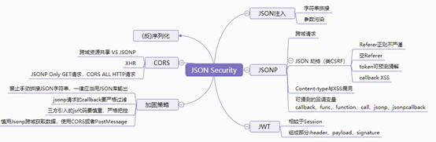

<!DOCTYPE html>
<html>
<head><meta name="generator" content="Hexo 3.8.0">
  <meta charset="utf-8">
  
  <title>接口安全道亦有道 | sm0nk&#39;s blog</title>

  <!-- keywords -->
  

  <meta name="viewport" content="width=device-width, initial-scale=1, maximum-scale=1">
  <meta name="description" content="xKungfoo是XCon组委会与北京未来安全信息技术有限公司共同主办的只属于中国人自己的技术交流大会。会议将聚焦当今热点话题，专注于网络安全领域中最新的研究成果和信息交互。xKungfoo的会议精神是为推动中国网络安全技术、攻防技术水平的发展，不断找寻创新想法、经验、解决方案。2018年，xKungfoo将首次在杭州举办！ x功夫峰会，我分享了关于接口安全的议题，在此我以文字版的形式分享下。">
<meta name="keywords" content="接口安全">
<meta property="og:type" content="article">
<meta property="og:title" content="接口安全道亦有道">
<meta property="og:url" content="http://yoursite.com/2018/05/01/接口安全道亦有道/index.html">
<meta property="og:site_name" content="sm0nk&#39;s blog">
<meta property="og:description" content="xKungfoo是XCon组委会与北京未来安全信息技术有限公司共同主办的只属于中国人自己的技术交流大会。会议将聚焦当今热点话题，专注于网络安全领域中最新的研究成果和信息交互。xKungfoo的会议精神是为推动中国网络安全技术、攻防技术水平的发展，不断找寻创新想法、经验、解决方案。2018年，xKungfoo将首次在杭州举办！ x功夫峰会，我分享了关于接口安全的议题，在此我以文字版的形式分享下。">
<meta property="og:locale" content="default">
<meta property="og:image" content="http://yoursite.com/2018/05/01/接口安全道亦有道/top10.png">
<meta property="og:image" content="http://yoursite.com/2018/05/01/接口安全道亦有道/types.png">
<meta property="og:image" content="http://yoursite.com/2018/05/01/接口安全道亦有道/tra.png">
<meta property="og:image" content="http://yoursite.com/2018/05/01/接口安全道亦有道/tra1.png">
<meta property="og:image" content="http://yoursite.com/2018/05/01/接口安全道亦有道/soapSQL1.png">
<meta property="og:image" content="http://yoursite.com/2018/05/01/接口安全道亦有道/soapSQL2.png">
<meta property="og:image" content="http://yoursite.com/2018/05/01/接口安全道亦有道/REST1.png">
<meta property="og:image" content="http://yoursite.com/2018/05/01/接口安全道亦有道/REST2.png">
<meta property="og:image" content="http://yoursite.com/2018/05/01/接口安全道亦有道/jsonp1.png">
<meta property="og:image" content="http://yoursite.com/2018/05/01/接口安全道亦有道/jsonp2.png">
<meta property="og:image" content="http://yoursite.com/2018/05/01/接口安全道亦有道/jsonp3.png">
<meta property="og:image" content="http://yoursite.com/2018/05/01/接口安全道亦有道/jsonp4.png">
<meta property="og:image" content="http://yoursite.com/2018/05/01/接口安全道亦有道/phpyun1">
<meta property="og:image" content="http://yoursite.com/2018/05/01/接口安全道亦有道/phpyun2.png">
<meta property="og:image" content="http://yoursite.com/2018/05/01/接口安全道亦有道/hongbao1.png">
<meta property="og:image" content="http://yoursite.com/2018/05/01/接口安全道亦有道/hongbao2.png">
<meta property="og:image" content="http://yoursite.com/2018/05/01/接口安全道亦有道/oauth1.png">
<meta property="og:image" content="http://yoursite.com/2018/05/01/接口安全道亦有道/oauth2.png">
<meta property="og:image" content="http://yoursite.com/2018/05/01/接口安全道亦有道/nissan.png">
<meta property="og:image" content="http://yoursite.com/2018/05/01/接口安全道亦有道/car1.png">
<meta property="og:image" content="http://yoursite.com/2018/05/01/接口安全道亦有道/car2.png">
<meta property="og:image" content="http://yoursite.com/2018/05/01/接口安全道亦有道/apiDetect1.png">
<meta property="og:image" content="http://yoursite.com/2018/05/01/接口安全道亦有道/apiDetect2.png">
<meta property="og:image" content="http://yoursite.com/2018/05/01/接口安全道亦有道/apiDetect3.png">
<meta property="og:image" content="http://yoursite.com/2018/05/01/接口安全道亦有道/apiDetect4.png">
<meta property="og:image" content="http://yoursite.com/2018/05/01/接口安全道亦有道/juhe.png">
<meta property="og:image" content="http://yoursite.com/2018/05/01/接口安全道亦有道/juhe2.png">
<meta property="og:updated_time" content="2021-07-27T07:54:15.869Z">
<meta name="twitter:card" content="summary">
<meta name="twitter:title" content="接口安全道亦有道">
<meta name="twitter:description" content="xKungfoo是XCon组委会与北京未来安全信息技术有限公司共同主办的只属于中国人自己的技术交流大会。会议将聚焦当今热点话题，专注于网络安全领域中最新的研究成果和信息交互。xKungfoo的会议精神是为推动中国网络安全技术、攻防技术水平的发展，不断找寻创新想法、经验、解决方案。2018年，xKungfoo将首次在杭州举办！ x功夫峰会，我分享了关于接口安全的议题，在此我以文字版的形式分享下。">
<meta name="twitter:image" content="http://yoursite.com/2018/05/01/接口安全道亦有道/top10.png">
  
    <link rel="alternative" href="/atom.xml" title="sm0nk&#39;s blog" type="application/atom+xml">
  
  
    <link rel="icon" href="http://p6.sinaimg.cn/3607464725/180/71341468803657">
  
  <link rel="stylesheet" href="/css/style.css">
  
  

  <script src="//cdn.bootcss.com/require.js/2.3.2/require.min.js"></script>
  <script src="//cdn.bootcss.com/jquery/3.1.1/jquery.min.js"></script>

  
</head></html>
<body>
  <div id="container">
    <div id="particles-js"></div>
    <div class="left-col">
    <div class="overlay"></div>
<div class="intrude-less">
	<header id="header" class="inner">
		<a href="/" class="profilepic">
			
			
			
		</a>

		<hgroup>
		  <h1 class="header-author"><a href="/">sm0nk</a></h1>
		</hgroup>

		

		
			<div class="switch-btn">
				<div class="icon">
					<div class="icon-ctn">
						<div class="icon-wrap icon-house" data-idx="0">
							<div class="birdhouse"></div>
							<div class="birdhouse_holes"></div>
						</div>
						<div class="icon-wrap icon-ribbon hide" data-idx="1">
							<div class="ribbon"></div>
						</div>
						
						
					</div>
					
				</div>
				<div class="tips-box hide">
					<div class="tips-arrow"></div>
					<ul class="tips-inner">
						<li>菜单</li>
						<li>标签</li>
						
						
					</ul>
				</div>
			</div>
		

		<div class="switch-area">
			<div class="switch-wrap">
				<section class="switch-part switch-part1">
					<nav class="header-menu">
						<ul>
						
							<li><a href="/categories/攻防渗透/">攻防渗透</a></li>
				        
							<li><a href="/categories/编程之道/">编程之道</a></li>
				        
							<li><a href="/categories/归纳总结/">归纳总结</a></li>
				        
							<li><a href="/categories/认知独省/">认知独省</a></li>
				        
						</ul>
					</nav>
					<nav class="header-nav">
						<div class="social">
							
								<a class="mail" target="_blank" href="mailto:sm0nk@qq.com" title="mail">mail</a>
					        
								<a class="weibo" target="_blank" href="http://weibo.com/shellr00t" title="weibo">weibo</a>
					        
						</div>
					</nav>
				</section>
				
				
				<section class="switch-part switch-part2">
					<div class="widget tagcloud" id="js-tagcloud">
						<a href="/tags/CTF/" style="font-size: 10px;">CTF</a> <a href="/tags/SQL注入/" style="font-size: 10px;">SQL注入</a> <a href="/tags/blog/" style="font-size: 10px;">blog</a> <a href="/tags/pentest/" style="font-size: 10px;">pentest</a> <a href="/tags/python/" style="font-size: 20px;">python</a> <a href="/tags/seleinum/" style="font-size: 10px;">seleinum</a> <a href="/tags/struts2/" style="font-size: 10px;">struts2</a> <a href="/tags/业务逻辑/" style="font-size: 10px;">业务逻辑</a> <a href="/tags/代理转发/" style="font-size: 10px;">代理转发</a> <a href="/tags/工控安全/" style="font-size: 10px;">工控安全</a> <a href="/tags/应急/" style="font-size: 20px;">应急</a> <a href="/tags/接口安全/" style="font-size: 10px;">接口安全</a> <a href="/tags/渗透/" style="font-size: 10px;">渗透</a> <a href="/tags/爆破/" style="font-size: 10px;">爆破</a> <a href="/tags/语言安全/" style="font-size: 10px;">语言安全</a> <a href="/tags/远程下载/" style="font-size: 10px;">远程下载</a>
					</div>
				</section>
				
				
				

				
			</div>
		</div>
	</header>				
</div>
    </div>
    <div class="mid-col">
      <nav id="mobile-nav">
  	<div class="overlay">
  		<div class="slider-trigger"></div>
  		<h1 class="header-author js-mobile-header hide">sm0nk</h1>
  	</div>
	<div class="intrude-less">
		<header id="header" class="inner">
			<div class="profilepic">
				
			</div>
			<hgroup>
			  <h1 class="header-author">sm0nk</h1>
			</hgroup>
			
			<nav class="header-menu">
				<ul>
				
					<li><a href="/categories/攻防渗透/">攻防渗透</a></li>
		        
					<li><a href="/categories/编程之道/">编程之道</a></li>
		        
					<li><a href="/categories/归纳总结/">归纳总结</a></li>
		        
					<li><a href="/categories/认知独省/">认知独省</a></li>
		        
		        <div class="clearfix"></div>
				</ul>
			</nav>
			<nav class="header-nav">
				<div class="social">
					
						<a class="mail" target="_blank" href="mailto:sm0nk@qq.com" title="mail">mail</a>
			        
						<a class="weibo" target="_blank" href="http://weibo.com/shellr00t" title="weibo">weibo</a>
			        
				</div>
			</nav>
		</header>				
	</div>
</nav>
      <div class="body-wrap"><article id="post-接口安全道亦有道" class="article article-type-post" itemscope itemprop="blogPost">
  
    <div class="article-meta">
      <a href="/2018/05/01/接口安全道亦有道/" class="article-date">
  	<time datetime="2018-05-01T00:08:08.000Z" itemprop="datePublished">2018-05-01</time>
</a>
    </div>
  
  <div class="article-inner">
    
      <input type="hidden" class="isFancy">
    
    
      <header class="article-header">
        
  
    <h1 class="article-title" itemprop="name">
      接口安全道亦有道
      
    </h1>
  

      </header>
      
      <div class="article-info article-info-post">
        
	<div class="article-tag tagcloud">
		<ul class="article-tag-list"><li class="article-tag-list-item"><a class="article-tag-list-link" href="/tags/接口安全/">接口安全</a></li></ul>
	</div>

        
	<div class="article-category tagcloud">
	<a class="article-category-link" href="/categories/归纳总结/">归纳总结</a>
	</div>


        
        <div class="clearfix"></div>
      </div>
      
    
    <div class="article-entry" itemprop="articleBody">
      
        <p>xKungfoo是XCon组委会与北京未来安全信息技术有限公司共同主办的只属于中国人自己的技术交流大会。会议将聚焦当今热点话题，专注于网络安全领域中最新的研究成果和信息交互。xKungfoo的会议精神是为推动中国网络安全技术、攻防技术水平的发展，不断找寻创新想法、经验、解决方案。2018年，xKungfoo将首次在杭州举办！</p>
<p>x功夫峰会，我分享了关于接口安全的议题，在此我以文字版的形式分享下。<br><a id="more"></a></p>
<!-- toc -->
<ul>
<li><a href="#0x01-为什么单独的讲接口安全">0x01 为什么单独的讲接口安全？</a></li>
<li><a href="#0x02-什么是接口">0x02 什么是接口？</a></li>
<li><a href="#0x03-接口有哪些分类">0x03 接口有哪些分类？</a></li>
<li><a href="#0x04-接口相关案例">0x04 接口相关案例</a></li>
<li><a href="#0x05-如何获得api地址或uri资源地址">0x05 如何获得API地址或URI资源地址</a></li>
<li><a href="#0x06-聚合归类">0x06 聚合归类</a></li>
<li><a href="#0x07-接口安全道法自然">0x07 接口安全道法自然</a></li>
</ul>
<!-- tocstop -->
<h1><span id="0x01-为什么单独的讲接口安全">0x01 为什么单独的讲接口安全？</span></h1><ol>
<li><p>关于OWASP Top10 2017版的漏洞变化：变化点除了日志监控外就是XXE和反序列化漏洞，其实这两种漏洞的上榜也间接体现了基于微服务架构的快速迭代的一种趋势</p>
<p></p>
</li>
<li><p>关于当前安全开发的形态，众多功能为了提供服务方便，均预留接口，但基于接口的认证、访问控制等的安全机制存在机制缺陷以及不安全的调用</p>
</li>
<li><p>接口安全存在的意识形态很容易被忽略</p>
</li>
</ol>
<p>曾记否，近段事件的币安平台帐号被盗、以太坊的偷渡漏洞。前者利用高权限的api自动化结合金融打法做空货币高价获利。 后者以JSONRPC接口持续调用转账操作，最后实现恶意转账。都与接口的权限控制有关系。</p>
<h1><span id="0x02-什么是接口">0x02 什么是接口？</span></h1><p>​    正常的知识逻辑，都要有定义。但传统的开发意义的接口又不足以作为研究的对象，所以梳理了两种类型：</p>
<ol>
<li>核心关键资源，凡是资源的调用（CRUD）都与接口有关系</li>
<li>凡是不是直接连接，需要“桥梁”过渡，均需要接口的辅助</li>
</ol>
<h1><span id="0x03-接口有哪些分类">0x03 接口有哪些分类？</span></h1><p>​       按照功能来讲接口类型比较多，并且有对应的漏洞，比如登录接口、支付接口、数据接口等；按照技术来讲其实主要是SOAP、REST、RPC。但归纳到数据形态主要还是XML和JSON。</p>
<p></p>
<h1><span id="0x04-接口相关案例">0x04 接口相关案例</span></h1><p><strong>功能接口关联分析案例</strong></p>
<p>功能均为平常业务系统正常功能，但根据小漏洞的串联以及再关联，造成的影响却是整个帐号体系甚至敏感数据。</p>
<p></p>
<p></p>
<p><strong>Webservice之SOAP SQL注入案例</strong></p>
<p>WebService的三要素是： </p>
<ol>
<li>SOAP (Simple Object AccessProtocol)：简易对象访问协议，soap用来描述传递信息的格式。</li>
<li>WSDL (WebServices DescriptionLanguage)：Web服务描述语言，用来描述如何访问具体的接口。 </li>
<li>UDDI (Universal DescriptionDiscovery and Integration)：通用描述、发现及整合，用来管理、分发、查询webService。</li>
</ol>
<p>在web URL中经常会看到关于这种写法的WebService.asmx?wsdl接口存在，此时就需要留意有无对应漏洞了。</p>
<p></p>
<p></p>
<p><strong>REST接口越权遍历案例</strong></p>
<p>直接请求API的个人信息链接，竟然获得直播妹子的小视频。根据结果数据x信息结构构造展示Demo</p>
<p></p>
<p><strong>JSONP接口跨域数据篡改漏洞</strong></p>
<p>某省的流量助手，在查询是隐藏手机四位，但数据传输分析调用过程中，可以查看完整信息，且未授权访问。构造后可以直接对其进行业务订阅</p>
<p></p>
<p></p>
<p><strong>微信phpyun三方接口注入漏洞案例</strong></p>
<p>当网站绑定了微信公众号时，我们提交的内容先传到微信服务器。然后经过微信生成xml格式的数据，附加上效验码传到网站。网站根据发送的内容进行判断整理，将生成好的数据返回给微信服务器。微信服务器接收到数据后进行解析，最终再反馈给用户。</p>
<p>此次的问题在于，phpyun对于微信提交过来的数据没有转义，保持了信任。最终导致注入的发生。</p>
<p></p>
<p></p>
<p><strong>某公众号-消息注入领红包漏洞</strong></p>
<p></p>
<p><strong>关于OAuth接口的安全漏洞</strong></p>
<p>登录系统时的微博登录方式<br>微博帐号验证成功后返回跳转网址</p>
<p><a href="http://i.tao123.com/sina_login.php?jump=http://i.tao123.com/#access_token=xxxxxxxxxxxxxx&amp;remind_in=******&amp;expires_in=******&amp;uid=*****" target="_blank" rel="noopener">http://i.tao123.com/sina_login.php?jump=http://i.tao123.com/#access_token=xxxxxxxxxxxxxx&amp;remind_in=******&amp;expires_in=******&amp;uid=*****</a>*<br>只要更换后面的uid 如果这个帐号ID在网站存在<br>网站则会授权登录访问此帐号</p>
<p></p>
<p>关于Oauth的进一步延伸</p>
<p></p>
<p>车联网的接口安全案例</p>
<p>通过API漏洞控制全球的NissanLEAFs</p>
<p></p>
<p>LEAF是一种电动汽车，在挪威这样的国家尤其受欢迎，它们提供巨大的财政激励来远离内燃机</p>
<p>LEAF的电池状态，VIN是唯一识别他的LEAF底盘的车辆识别号码 ；｛获得汽车状态、远程充耗电、打开关闭空调、驾驶历史｝</p>
<p>任何人都可能枚举VIN并控制任何响应的车辆的物理功能</p>
<p></p>
<h1><span id="0x05-如何获得api地址或uri资源地址">0x05 如何获得API地址或URI资源地址</span></h1><p>基于BrupSuite的sitemap二次分析。</p>
<p>有两种方式</p>
<p>第一种，直接依据sitemap的访问记录结果进行结果筛选，比如结合正则获取响应包的包含href|callback|&lt;xml|{.*}</p>
<p>第二种，基于Sitemap的二次开发的接口地址查找插件，类似被动式扫描原理，需要测试者渗透过程中交互点击的数据包，包括请求包和返回包。针对数据包信息，进行标签匹配和文本匹配。</p>
<p>本来第二种方式可实现漏洞的二次预判，迫于时间，现在实现的是接口地址的定位发现。</p>
<p></p>
<p>被动扫描器之输入源分析规则——取可能的标签Value</p>
<p></p>
<p>最终实现的效果</p>
<p></p>
<p></p>
<h1><span id="0x06-聚合归类">0x06 聚合归类</span></h1><p>​       列举了众多的接口相关的漏洞案例，归纳汇总后其实主要基于数据形态xml和json的安全演变。</p>
<p></p>
<p></p>
<h1><span id="0x07-接口安全道法自然">0x07 接口安全道法自然</span></h1><p><strong>漏洞挖掘：</strong></p>
<ol>
<li>基础服务端漏洞和业务漏洞的防御相对成熟；</li>
<li>对于接口甚至敏感接口：安全关注度、自身机制的缺陷、再与典型漏洞的关联利用</li>
<li>没有低危的漏洞，只是还没碰到可利用的场景</li>
</ol>
<p><strong>漏洞演化规律：</strong></p>
<ol>
<li>漏洞的场景化，一定是结合实际业务（应用业务、营销活动、具体厂家）</li>
<li>漏洞的行业化，比如金融证券行业的打法</li>
<li>漏洞的利益化，BTC勒索</li>
<li>漏洞的关联化，单独一个漏洞点影响有限，递归迭代关联后的影响不可估</li>
</ol>
<p><strong>漏洞挖掘道与术</strong></p>
<ol>
<li>博弈对手升级</li>
<li>知识集合储备</li>
<li>漏洞本质原理</li>
<li>逻辑流程演变</li>
<li>利用形式组合</li>
<li>结果奇点临近（道VS术）</li>
</ol>
<p>在安全技术中，例如二进制更侧重道，Web安全方向更侧重术，随着对抗技术的发展，大多有意义漏洞都会是组合拳趋势，既考虑道又要考虑术，二者找一个结合点。</p>

      
    </div>
    
  </div>
  
    
<nav id="article-nav">
  
    <a href="/2018/09/30/应急分析信息收集linux/" id="article-nav-newer" class="article-nav-link-wrap">
      <strong class="article-nav-caption">&lt;</strong>
      <div class="article-nav-title">
        
          应急分析信息收集linux
        
      </div>
    </a>
  
  
    <a href="/2017/12/04/Web攻防之暴力破解-何足道版/" id="article-nav-older" class="article-nav-link-wrap">
      <div class="article-nav-title">Web攻防之暴力破解(何足道版)</div>
      <strong class="article-nav-caption">&gt;</strong>
    </a>
  
</nav>

  
</article>


</div>
      <footer id="footer">
  <div class="outer">
    <div id="footer-info">
      <div class="footer-left">
        &copy; 2023 sm0nk
      </div>
        <div class="footer-right">
          <a href="http://hexo.io/" target="_blank">Hexo</a>  Theme <a href="https://github.com/smackgg/hexo-theme-smackdown" target="_blank">Smackdown</a>
        </div>
    </div>
  </div>
</footer>
    </div>
    
  <link rel="stylesheet" href="/fancybox/jquery.fancybox.css">


<script>
	var yiliaConfig = {
		fancybox: true,
		mathjax: true,
		animate: true,
		isHome: false,
		isPost: true,
		isArchive: false,
		isTag: false,
		isCategory: false,
		open_in_new: true
	}
</script>
<script src="/js/main.js"></script>


<script type="text/x-mathjax-config">
MathJax.Hub.Config({
    tex2jax: {
        inlineMath: [ ['$','$'], ["\\(","\\)"]  ],
        processEscapes: true,
        skipTags: ['script', 'noscript', 'style', 'textarea', 'pre', 'code']
    }
});

MathJax.Hub.Queue(function() {
    var all = MathJax.Hub.getAllJax(), i;
    for(i=0; i < all.length; i += 1) {
        all[i].SourceElement().parentNode.className += ' has-jax';                 
    }       
});
</script>

<script src="//cdn.bootcss.com/mathjax/2.7.0/MathJax.js"></script>


  </div>
</body>
</html>